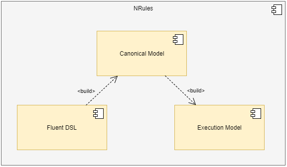
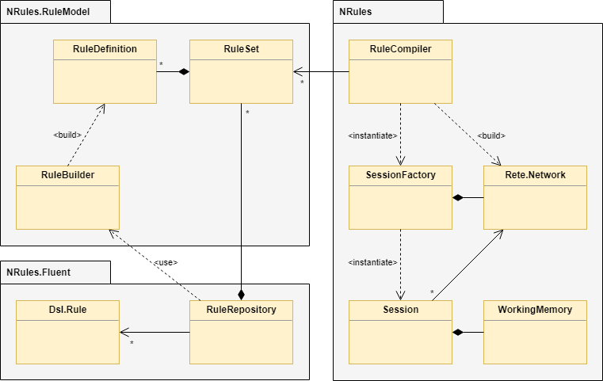

Architecture
NRules engine consists of several components, and is designed in a way that more components and tools will be layered on top of it, augmenting its functionality and expanding its area of applicability.

The central part of any rules engine is rules, and they can exist in many different forms. First, rules exist in a form in which they are written, which in case of NRules is internal DSL that uses fluent API. One of the design goals behind NRules is to support more than one rules language, and so internal DSL is translated into a canonical form. In the future other languages can be translated to the same canonical form.
The canonical rules model is akin to an abstract syntax tree (AST) in the world of compilers/DSL design. In this form rules are represented as data that can be analysed, viewed, reported on and, most importantly, compiled to an executable form.
Executable rules model is a run-time representation of rules that can efficiently interact with the rest of the application. NRules is a production rules engine and its executable form is a rete network, that can very efficiently find matches between facts and rules.

NRules.Fluent namespace contains classes that enable declaratively authoring rules using internal DSL, which is a fluent C# API. A RuleRepository is then used to scan assemblies to discover rules and interact with RuleBuilder to translate them into their canonical form.
NRules.RuleModel namespace contains classes that represent rules as a canonical model. At this level rules are a collection of rule sets, each containing rule definitions.
NRules namespace contains classes that implement the run-time side of the rules engine. RuleCompiler converts rules from the canonical form to a rete network, which is contained within an ISessionFactory. The session factory is then used to create instances of an ISession, which contains the facts that the engine will use for inference (aka working memory). There may be multiple concurrent sessions created off of the same session factory; they will all share the same rete network (which means they will use the same set of rules), but they will use different sets of facts and, from the client's perspective, are completely independent.